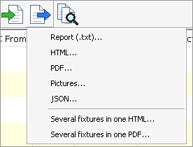
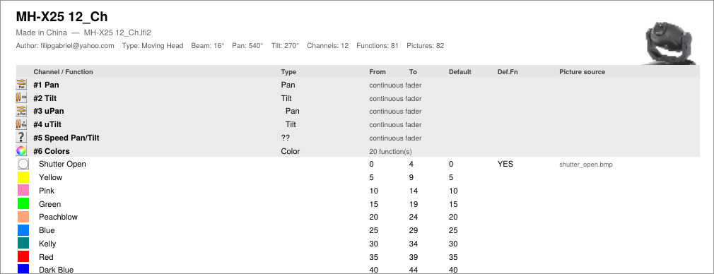

For: Full
The toolbar's Export button and File > Export write the profile in other forms: to read it, print it, send it, or use it in another program. The export is made from the profile as it is in the editor, even when it is not saved yet.

| Export | What it writes |
|---|---|
| Report (.txt)... | A text file: the data of the fixture, then every channel with its type, Fade and presets (ranges, default, picture). |
| HTML... | One web page with the fixture, its picture, its channels and presets with their pictures - to open in any browser. |
| PDF... | The same as a PDF (A4 landscape), ready to print. |
| Pictures... | Every picture of the profile as a PNG file, in a new folder
<name>_pictures inside the folder you choose: the fixture's picture and one for each preset. |
| JSON... | The profile as a JSON file (without the pictures), for other programs. |
| Several fixtures in one HTML... | Choose several profiles at once (Ctrl+click in the file window): one web page with all of them. |
| Several fixtures in one PDF... | The same as one PDF - for example the fixtures of a project, to print. |

The beginning of the PDF of a profile.
A profile that has no file yet appears as (not saved) in what is exported.